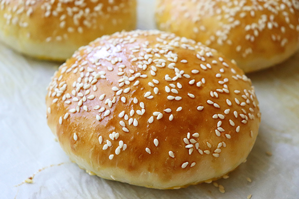

Hamburger Bun

Finished Bun
The steps involved in making this bun is very easy
Ingredients
- 1 cup milk
- 2 tablespoons butter
- 1 tablespoon white sugar
- 1 ½ teaspoons salt
- 5 ½ cups all-purpose flour
- 1 (.25 ounce) envelope active dry yeast
- 1 egg yolk
- 1 tablespoon water